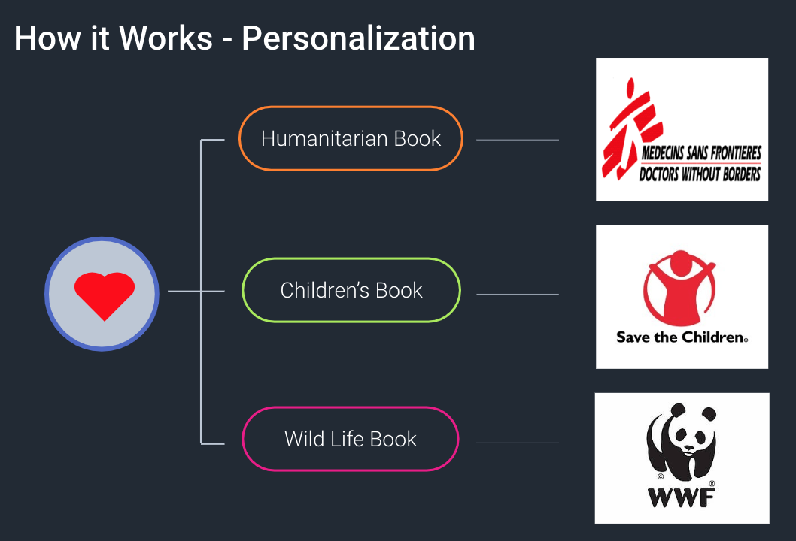
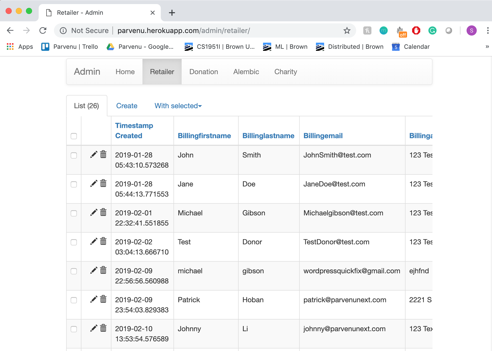

The Parvenu AI helps businesses grow by strengthening the bond between customer and retailer, gives each customer the choice to donate to a charity tailored to their interests, and empowers charities to help their community through increased donations.
We interacted with the part of Parvenu that is able to receive product names and categories and respond with charity donations based on these.
We had a two fold task ahead of us. First we needed to embed Parvenu's recommender system into a test Magento store. Second we needed to familiarize ourself with Parvenu's AI to send accurate requests to their backend based on the customer's cart and display a popup with a recommended charity.
We used Parvenu's recommender API which uses a word-to-vec AI algorithm to present the shopper with the option to donate to a cause they are more likely to care about by analyzing the items they add to their cart. For example, purchasing dog food means seeing an animal charity.
The charity that the algoirthm comes up with is then displayed in a pop-up to the customer when they click ‘Add-to-Cart’ as a charity product. The customer can then donate to this charity by adding the product to their cart. The price of the charity product which is $1 is the amount donated.
We created a 'Retailer Dashboard' which appears in the retailer admin page. This is used to connect and track how many online stores have register with Parvenu's Magento plugin. The dashboard includes a simple form and instructional video. Once the form is submitted it makes a POST request to Parvenu’s Heroku database, which is then updated with the new retailer’s info.
The 'Parvenu Dashboard' is a visual representation of their Postgres sql database. It has two tabs for parvenu to keep track of 1) the ‘Retailers’ that are have enabled the plugin and 2) The ‘Donations’ that have been recorded through the plugin.This dashboard is used to bill the retailers at the end of each month and keeps a comprehensive list of donations to report to Network for Good.